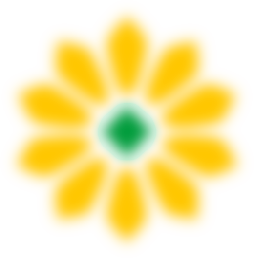
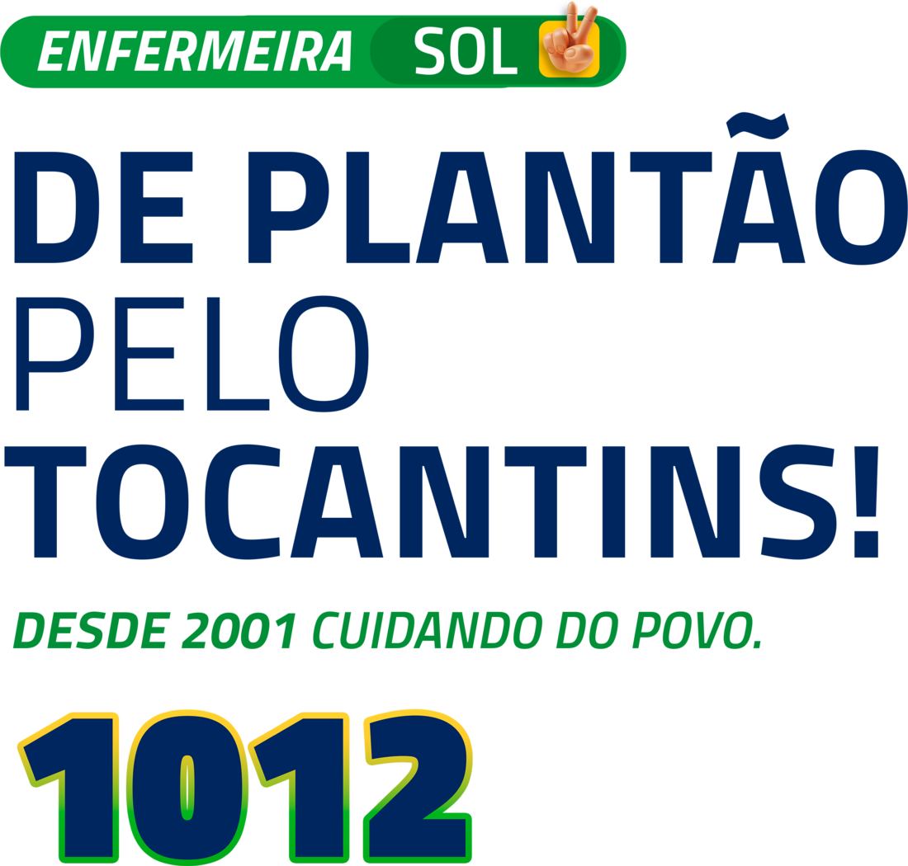
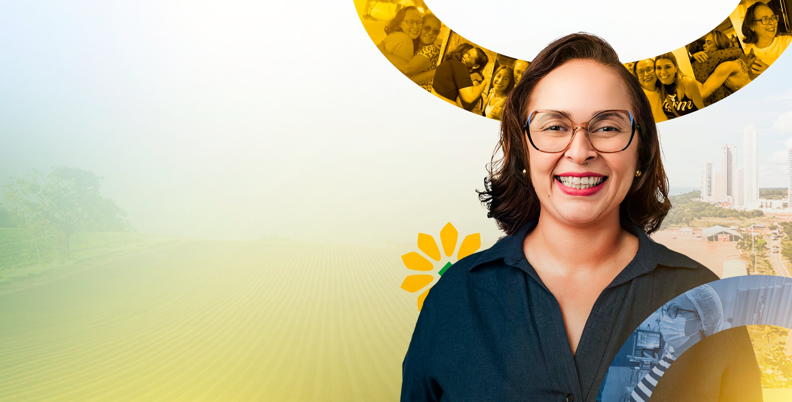

Quem é a Sol
Antes de candidata,
enfermeira.
Meu nome é Sol. Aprendi a olhar para o Tocantins como se aprende a cuidar de um paciente: de perto, com as mãos na realidade, sem discurso pronto.
Não vim da política. Vim do plantão, do corredor de hospital, da luta sindical. Foi ali que entendi na pele o que é cuidar de todo mundo e, muitas vezes, não ser cuidada por ninguém.
Por isso lutei, junto ao COFEN, ao COREN e aos sindicatos, pelas condições dignas de quem trabalha na enfermagem. Fui liderança do movimento Basta, que garantiu o reajuste da insalubridade a todos os servidores do Tocantins, e do Mais RespeiTO, que uniu a categoria em nível nacional. Fui madrinha estadual do Piso Salarial da Enfermagem e recebi do COFEN o Prêmio Anna Nery, a maior condecoração da enfermagem brasileira. Fora do hospital, sou uma das principais vozes do estado na causa animal, membro do Comitê Estadual de Proteção e Defesa dos Animais.
Esse histórico não é discurso de campanha. É o que me trouxe até aqui, e é o que vai me guiar na Câmara.
Trajetória
O que veio antes da candidatura.
O mandato
Conheça as minhas propostas.
Em resumo
Isso é o que este mandato entrega em 4 anos.
Não são 22 promessas soltas. São a tradução, em instrumentos reais de mandato, de uma trajetória de quem já lutou por essas causas fora da política, pela enfermagem, pelo SUS, pela educação inclusiva, pelos animais e por um Tocantins que gera oportunidade além do agro e do funcionalismo.
Uma enfermeira na Câmara dos Deputados, com os pés na realidade e as mãos nos instrumentos certos pra transformá-la.
De plantão pelo Tocantins. Agora é só vitória. Sol, 1012.